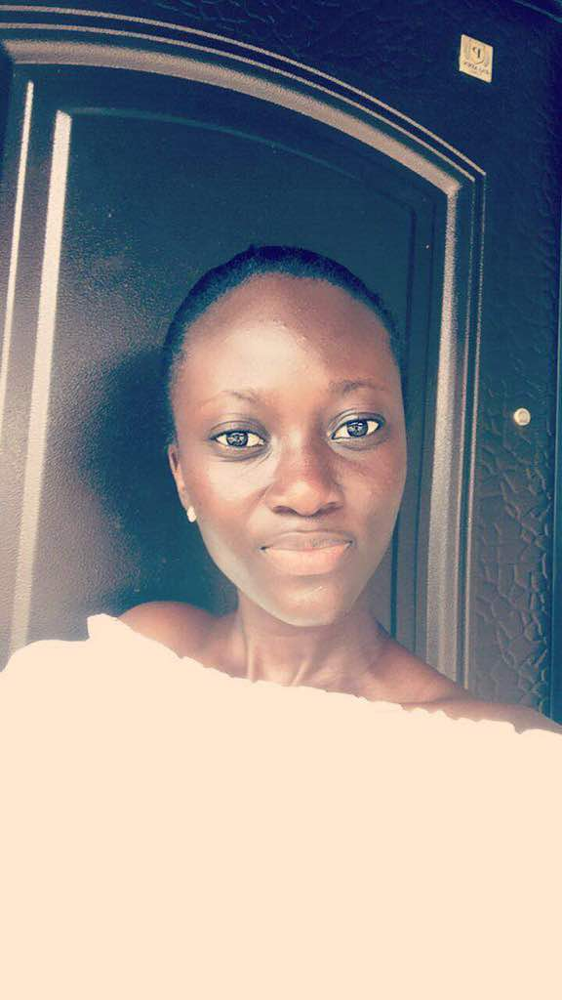

Hi! I am Doreen Osafo Acheampong. I am twenty-four years and I live at Amasaman. Actually I grew up in North Kaneshie, where I lived with both parents and two siblings, a brother and a sister. My siblings are both students and my parents are also both traders. I studied Geography and Political Science at the University of Education , Winneba. I am currently a national service person at the regional office of the Environmental Protection Agency at Amasaman. I am interested in literature , poetry, creative arts and fashion. My favourite intellectual game is scrabble though I barely play it. I love reading alot and I love to teach children as well. I hope to build a community libray some day. My dream is to be a fashion enterprenuer. I joined this program because I saw it as an opportunity to learn something new outside my field of studey, to build skills and also because I share in your reason for organising such a program, which is to bridge the gap betweem womwn and technology. I am hoping to build myself technologically, to learn from others and to put into practical use what I have learnt. I am also looking forward to build myself as an aspiring enterprenuer at the end of the program.
